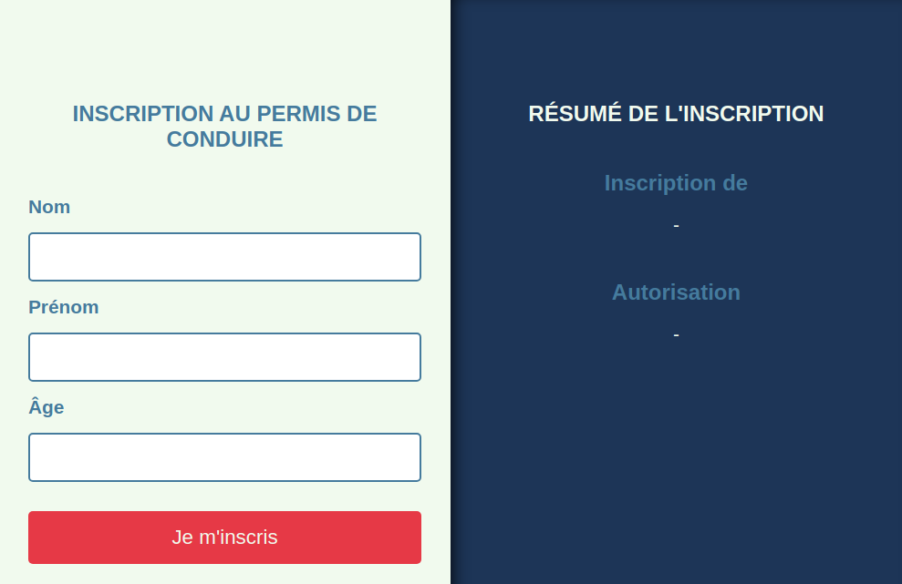

Une auto-école vous demande de créer une page pour savoir si quelqu'un peut s'inscrire afin de passer le permis de conduire. Selon les données tapées par l'utilisateur dans un formulaire, il faudra lui dire s'il peut ou non s'inscrire.
Le formulaire est déjà créé et il faudra récupérer ses valeurs à la soumission pour pouvoir afficher des informations en conséquence.
Les instructions sont en commentaire du fichier index.php

Détails
Si la personne est trop jeune pour s'inscrire, vous pouvez en plus afficher dans combien d'années ce sera possible.
On peut s'inscrire à partir de 16 ans, donc le calcul à faire sera :
hljs 16 - age de la personne